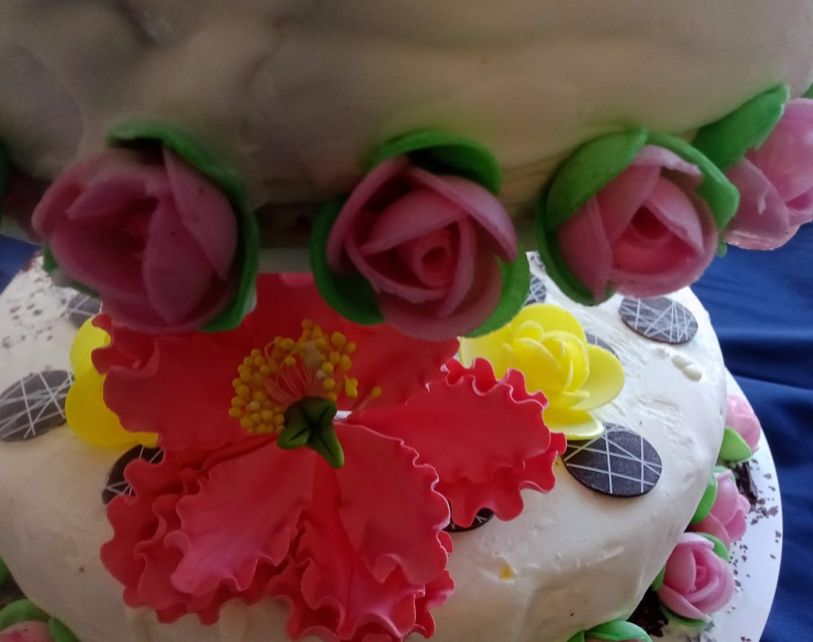
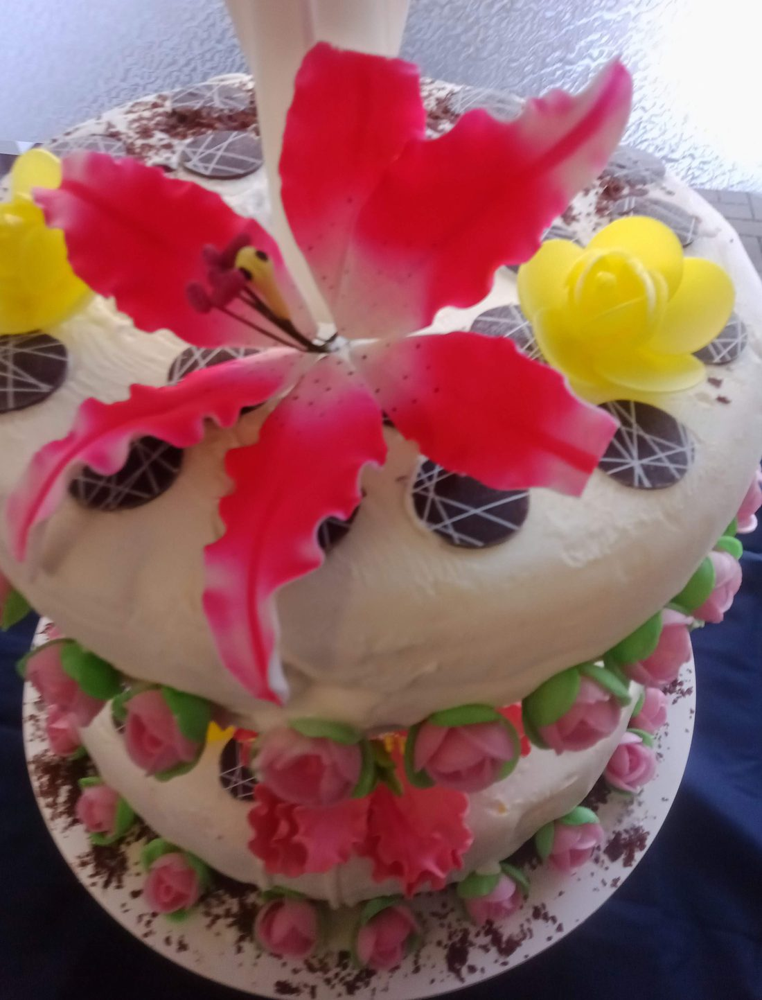
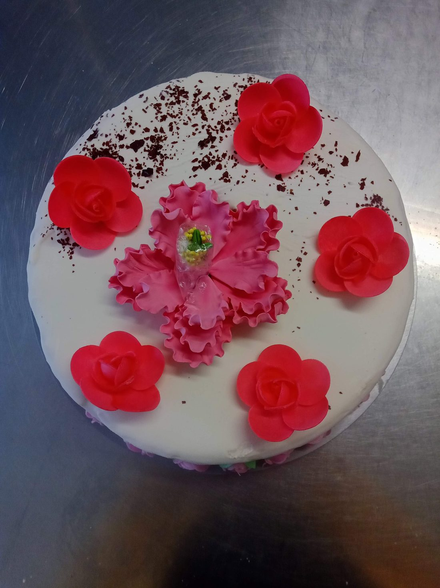

💍 Torta gelato per matrimonio

Semplice da costruire, a una condizione: l'abbattitore
Una torta gelato per un matrimonio a più piani è semplice da costruire, ma serve l'abbattitore. Si lavora sempre con stampi in silicone di diverse dimensioni, uno per ogni piano, e il metodo di costruzione resta quello della guida principale: strati sottili, abbattimento, glassa.
Qui sotto trovi alcune torte a più piani che ho realizzato e i consigli che do su gusti, glassa e decorazioni.
📸 Le torte
Alcune delle torte nuziali di gelato che ho preparato, con le decorazioni usate.



Che gelato per ogni piano
- La torta più grande o base: un gelato con pochi zuccheri, meglio se vegano.
- Il secondo piano: un gelato alla frutta oppure misto.
- Il primo strato: un mix di gelati alle creme.
Un'idea di gusti
Torta di base: yogurt vegano variegato con pezzetti di frutta caramellata, poi un variegato tra uno strato e l'altro, quindi un gelato alla fragola e in cima il cioccolato fondente.
Torta di mezzo: un mix di frutta, evitando melone, anguria, banana e frutti di bosco, perché sono troppo morbidi.
Abbattimento e glassa
Bisogna abbattere bene la temperatura della torta: in questo modo dura di più. Per la glassa è meglio quella di cioccolato bianco, che si può colorare o aromatizzare. Il cioccolato ha inoltre la capacità di ritardare lo scioglimento del gelato.
Decorazioni
Una volta glassata la torta ci si può sbizzarrire con le decorazioni. Il trucco è usare decorazioni secche, non cremose: nelle foto ci sono fiori in pasta di zucchero, rose di ostia, dischi di cioccolato e scaglie di cioccolato.
Cosa chiedere prima di accettare l'ordine
- Data, orario del taglio della torta e numero degli invitati (da cui dipendono diametro e numero dei piani).
- Gusti dei gelati, allergeni e intolleranze (senza latte, senza glutine, vegana): vedi le pagine su senza latte e vegane.
- Colori e tema delle decorazioni, eventuale scritta.
- Dove si consegna, se c'è un freezer e chi la riceve.
Altre pagine utili
💬 Una torta per il tuo matrimonio?
Scrivici data, numero di invitati e gusti che hai in mente: ti diamo gratuitamente consigli su piani, basi e decorazioni.